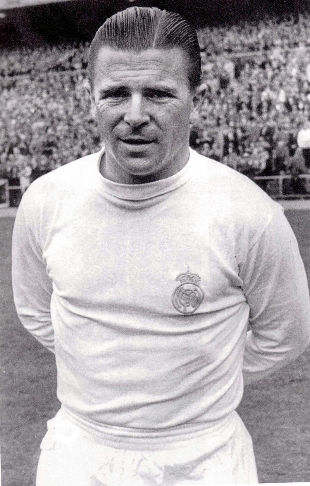

A Magyar Foci
A Magyar Labdarúgó válogatott fénykora 1938 és 1968 között volt ahol
több olimpiai aranyérmet, illetve egy világbajnoki ezüst érmet és egy
európabajnoki bronzérmet is szerzett az akkori csapat. Ezt követően a
magyar futball nem ért el nagy sikereket. Legjobb FIFA-vilagranglista
helyezését 2016-ban március 7-én érte el, ahol a 18. helyen állt.
Napjainkban már tudunk feltörekvő tehetségekről, szinte már sztárokról
és legendákról kik nevét a világ sose felejti.
Kezdeném a legendákkal:
Az Aranycsapat
Az összes tagját felsorolhatnám, de kiemelek egyet a mai napig a világ legismertebb magyarját: Puskás Ferenc (Öcsi).
A csapat legnagyobb sikerei:
- 1952. olimpiai aranyérem
- 1948-1953-as Európa-kupában aranyérem
- Anglia ellen 6-3 as győzelem (az évszádad mérkőzése)
- 1954. világbajnoki ezüstérem
|
 |
Napjainkban pedig egy feltörekvő tehetség Szoboszlai Dominikról ejtenék pár szót. A
ma 20 éves 2000. október 25-én született magyar labdarúgó jelenlegi
klubbja az RB Leipzig. 2019. március 21-én mutatkozott be a felnőtt
válogatott csapatban
először. Első gólját szabadrúgásból lőtte ezen év szeptember 19-én a
szlovákok ellen.
Sikerei mellett eddig "csupán" Osztrák bajnoki címet szerepelnek.
|
|